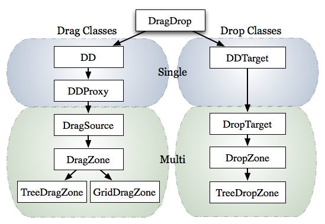
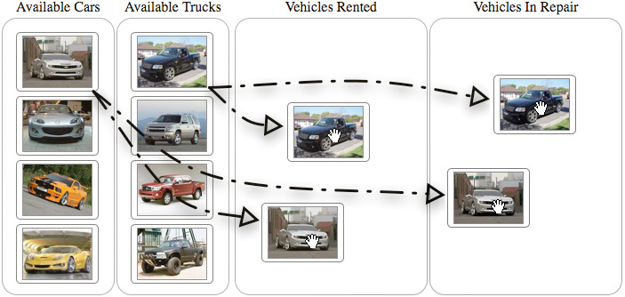
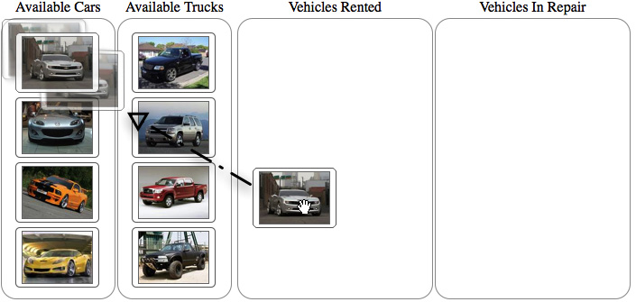
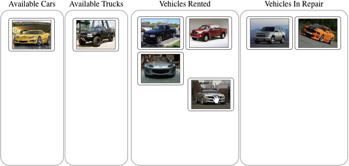

Drag and Drop
Many classes have shortcut names used when creating (instantiating) a class with a
configuration object. The shortcut name is referred to as an alias (or xtype if the
class extends Ext.Component). The alias/xtype is listed next to the class name of
applicable classes for quick reference.
Framework classes or their members may be specified as private or protected. Else,
the class / member is public. Public, protected, and private are access
descriptors used to convey how and when the class or class member should be used.
Public classes and class members are available for use by any other class or application code and may be relied upon as a stable and persistent within major product versions. Public classes and members may safely be extended via a subclass.
Protected class members are stable public members intended to be used by the
owning class or its subclasses. Protected members may safely be extended via a subclass.
Private classes and class members are used internally by the framework and are not intended to be used by application developers. Private classes and members may change or be omitted from the framework at any time without notice and should not be relied upon in application logic.
static label next to the
method name. *See Static below.Below is an example class member that we can disect to show the syntax of a class member (the lookupComponent method as viewed from the Ext.button.Button class in this case).
Let's look at each part of the member row:
lookupComponent in this example)( item ) in this example)Ext.Component in this case). This may be omitted for methods that do not
return anything other than undefined or may display as multiple possible values
separated by a forward slash / signifying that what is returned may depend on the
results of the method call (i.e. a method may return a Component if a get method calls is
successful or false if unsuccessful which would be displayed as
Ext.Component/Boolean).PROTECTED in
this example - see the Flags section below)Ext.container.Container in this example). The source
class will be displayed as a blue link if the member originates from the current class
and gray if it is inherited from an ancestor or mixed-in class.view source in the example)item : Object in the example).undefined a "Returns" section
will note the type of class or object returned and a description (Ext.Component in the
example)Available since 3.4.0 - not pictured in
the example) just after the member descriptionDefaults to: false)The API documentation uses a number of flags to further commnicate the class member's function and intent. The label may be represented by a text label, an abbreviation, or an icon.
classInstance.method1().method2().etc();false is returned from
an event handler- Indicates a framework class
- A singleton framework class. *See the singleton flag for more information
- A component-type framework class (any class within the Ext JS framework that extends Ext.Component)
- Indicates that the class, member, or guide is new in the currently viewed version
- Indicates a class member of type config
- Indicates a class member of type property
- Indicates a class member of type
method
- Indicates a class member of type event
- Indicates a class member of type
theme variable
- Indicates a class member of type
theme mixin
- Indicates that the class, member, or guide is new in the currently viewed version
Just below the class name on an API doc page is a row of buttons corresponding to the types of members owned by the current class. Each button shows a count of members by type (this count is updated as filters are applied). Clicking the button will navigate you to that member section. Hovering over the member-type button will reveal a popup menu of all members of that type for quick navigation.
Getting and setter methods that correlate to a class config option will show up in the methods section as well as in the configs section of both the API doc and the member-type menus just beneath the config they work with. The getter and setter method documentation will be found in the config row for easy reference.
Your page history is kept in localstorage and displayed (using the available real estate) just below the top title bar. By default, the only search results shown are the pages matching the product / version you're currently viewing. You can expand what is displayed by clicking on the button on the right-hand side of the history bar and choosing the "All" radio option. This will show all recent pages in the history bar for all products / versions.
Within the history config menu you will also see a listing of your recent page visits. The results are filtered by the "Current Product / Version" and "All" radio options. Clicking on the button will clear the history bar as well as the history kept in local storage.
If "All" is selected in the history config menu the checkbox option for "Show product details in the history bar" will be enabled. When checked, the product/version for each historic page will show alongside the page name in the history bar. Hovering the cursor over the page names in the history bar will also show the product/version as a tooltip.
Both API docs and guides can be searched for using the search field at the top of the page.
On API doc pages there is also a filter input field that filters the member rows using the filter string. In addition to filtering by string you can filter the class members by access level and inheritance. This is done using the checkboxes at the top of the page.
The checkbox at the bottom of the API class navigation tree filters the class list to include or exclude private classes.
Clicking on an empty search field will show your last 10 searches for quick navigation.
Each API doc page (with the exception of Javascript primitives pages) has a menu view of metadata relating to that class. This metadata view will have one or more of the following:
Ext.button.Button class has an alternate class name of Ext.Button). Alternate class
names are commonly maintained for backward compatibility.Runnable examples (Fiddles) are expanded on a page by default. You can collapse and expand example code blocks individually using the arrow on the top-left of the code block. You can also toggle the collapse state of all examples using the toggle button on the top-right of the page. The toggle-all state will be remembered between page loads.
Class members are collapsed on a page by default. You can expand and collapse members using the arrow icon on the left of the member row or globally using the expand / collapse all toggle button top-right.
Viewing the docs on narrower screens or browsers will result in a view optimized for a smaller form factor. The primary differences between the desktop and "mobile" view are:
The class source can be viewed by clicking on the class name at the top of an API doc page. The source for class members can be viewed by clicking on the "view source" link on the right-hand side of the member row.

One of the most powerful interaction design patterns available to developers is "Drag and Drop." We utilize Drag and Drop without really giving it much thought - especially when its done right. Here are 5 easy steps to ensure an elegant implementation.
A drag operation, essentially, is a click gesture on some UI element while the mouse button is held down and the mouse is moved. A drop operation occurs when the mouse button is released after a drag operation. From a high level, drag and drop decisions can be summed up by the following flow chart.

To speed up our development, Ext JS provides us with the Ext.dd classes to manage the basic decisions for us. In this guide, we will cover coding for the appearance and removal of the drop invitation, invalid drop repair and what happens when a successful drop occurs.
A first glance of the classes in the Ext.dd documentation might seem a bit intimidating. But, if we take a quick moment to look at the classes, we see that they all stem from the DragDrop class and most can be categorized into Drag or Drop groups. With a bit more time and digging, we can see that the classes can be further categorized into single node and multiple node drag or drop interactions.

In order to learn about the basics of drag and drop we'll focus on applying single drag and drop interactions to DOM nodes. To do this, we'll utilize the DD and DDTarget classes, which provide the base implementations for their respective drag and drop behaviors. However, we need to discuss what our objectives are before we can start implementing drag and drop.
Lets say we've been asked to develop an application that will provide a rental car company the ability to place their cars and trucks in one of three states: available, rented or in repair status. The cars and trucks are only allowed to be placed in their respective "available" container.

To get started, we must make the cars and trucks "dragable". For this, we'll use DD. We'll need to make the rented, repair and vehicle containers "drop targets". For this we'll use DDTarget. Lastly, we'll use different drag drop groups to help enforce the requirement that cars and trucks can only be dropped into their respective "available" containers. Now we can begin coding by adding drag operations to the cars and trucks.
To configure the vehicle DIVs elements as dragable, we'll need to obtain a list and loop through it to instantiate new instances of DD. Here's how we do it.
Ext.onReady(function() {
// Create an object that we'll use to implement and override drag behaviors a little later
var overrides = {};
// Configure the cars to be draggable
var carElements = Ext.get('cars').select('div');
Ext.each(carElements.elements, function(el) {
var dd = Ext.create('Ext.dd.DD', el, 'carsDDGroup', {
isTarget : false
});
//Apply the overrides object to the newly created instance of DD
Ext.apply(dd, overrides);
});
var truckElements = Ext.get('trucks').select('div');
Ext.each(truckElements.elements, function(el) {
var dd = Ext.create('Ext.dd.DD', el, 'trucksDDGroup', {
isTarget : false
});
Ext.apply(dd, overrides);
});
});
All drag and drop classes are designed to be implemented by means of overriding its methods. That's why in the above code segment, we have create an empty object called overrides, which will be filled in later with overrides specific to the action we need. We get of list of car and truck elements by leveraging the DomQuery select method to query the cars container for all the child div elements. To make the cars and truck elements dragable, we create a new instance of DD, passing in the car or truck element to be dragged and the drag drop group that it is to participate in. Notice that the vehicle types have their own respective drag drop group. This will be important to remember later when we setup the rented and repair containers as drop targets. Also notice that we're applying the overrides object to the newly created instances of DD using Ext.apply., which is a handy way to add properties or methods to an existing object. Before we can continue with our implementation, we need to take a quick moment to analyze what happens when you drag an element on screen. With this understanding, the rest of the implementation will fall into place.
The first thing you'll notice when dragging the car or truck elements around is that they will stick wherever they are dropped. This is OK for now because we've just begun our implementation. What is important is to understand how the drag nodes are being affected. This will aid us in coding for the return to their original positions when they are dropped on anything that is not a valid drop target, which is known as an "invalid drop". The below illustration uses FireBug's HTML inspection panel and highlights the changes being made by when a drag operation is applied to the Camaro element.

While inspecting the drag element during a drag operation, we can see a style attribute added to the element with three CSS values populated: position, top and left. Further inspection reveals that the position attribute set to relative and top and left attributes updating while the node is being dragged around. After a the drag gesture completes, the style attribute remains along with the styles contained therein. This is what we have to clean up when we code for the repair of an invalid drop. Until we setup proper drop targets, all drop operations are considered invalid.
The path of least resistance is to repair an invalid drop by reseting the style attribute that is applied during the drag operation. This means that the drag element would disappear from under the mouse and reappear where it originated and would be quite boring. To make it smoother, we'll use Ext.Fx to animate this action. Remember that the drag and drop classes were designed to have methods overridden. To implement repair, we'll need to override the b4StartDrag, onInvalidDrop and endDrag methods. Lets add the following methods to our overrides object above and we'll discuss what they are and do.
var overrides = {
// Called the instance the element is dragged.
b4StartDrag : function() {
// Cache the drag element
if (!this.el) {
this.el = Ext.get(this.getEl());
}
//Cache the original XY Coordinates of the element, we'll use this later.
this.originalXY = this.el.getXY();
},
// Called when element is dropped in a spot without a dropzone, or in a dropzone without matching a ddgroup.
onInvalidDrop : function() {
// Set a flag to invoke the animated repair
this.invalidDrop = true;
},
// Called when the drag operation completes
endDrag : function() {
// Invoke the animation if the invalidDrop flag is set to true
if (this.invalidDrop === true) {
// Remove the drop invitation
this.el.removeCls('dropOK');
// Create the animation configuration object
var animCfgObj = {
easing : 'elasticOut',
duration : 1,
scope : this,
callback : function() {
// Remove the position attribute
this.el.dom.style.position = '';
}
};
// Apply the repair animation
this.el.setXY(this.originalXY[0], this.originalXY[1], animCfgObj);
delete this.invalidDrop;
}
},
In the above code, we begin by overriding the b4StartDrag method, which is called the instant the drag element starts being dragged around screen and makes it an ideal place to cache the drag element and original XY coordinates - which we will use later on in this process. Next, we override onInvalidDrop, which is is called when a drag node is dropped on anything other than a drop target that is participating in the same drag drop group. This override simply sets a local invalidDrop property to true, which will be used in the next method. The last method we override is endDrag, which is called when the drag element is no longer being dragged around screen and the drag element is no longer being controlled by the mouse movements. This override will move the drag element back to its original X and Y position using animation. We configured the animation to use the elasticOut easing to provide a cool and fun bouncy effect at end of the animation.

OK, now we have the repair operation complete. In order for it to work on the drop invitation and valid drop operations, we need to setup the drop targets.
Our requirements dictate that we will allow cars and trucks to be in be dropped in the rented and repair containers as well as their respective original containers. To do this, we'll need to instantiate instances of the DDTarget class. Here's how its done.
// Instantiate instances of Ext.dd.DDTarget for the cars and trucks container
var carsDDTarget = Ext.create('Ext.dd.DDTarget', 'cars','carsDDGroup');
var trucksDDTarget = Ext.create('Ext.dd.DDTarget', 'trucks', 'trucksDDGroup');
// Instantiate instances of DDTarget for the rented and repair drop target elements
var rentedDDTarget = Ext.create('Ext.dd.DDTarget', 'rented', 'carsDDGroup');
var repairDDTarget = Ext.create('Ext.dd.DDTarget', 'repair', 'carsDDGroup');
// Ensure that the rented and repair DDTargets will participate in the trucksDDGroup
rentedDDTarget.addToGroup('trucksDDGroup');
repairDDTarget.addToGroup('trucksDDGroup');
In the above code snippet, we have setup drop targets for the cars, trucks, rented and repair elements. Notice that the cars container element only participates in the "carsDDGroup" and the trucks container element participates in the "trucksDDGroup". This helps enforce the requirement that cars and trucks can only be dropped in their originating container. Next, we instantiate instances DDTarget for the rented and repair elements. Initially, they are configured to only participate in the "carsDDGroup". In order to allow them to participate in the "trucksDDGroup", we have to add it by means of addToGroup. OK, now we've configured our drop targets. Lets see what happens when we drop the cars or trucks on a valid drop element.

In exercising the drop targets, we see that the drag element stays exactly its dropped. That is, images can be dropped anywhere on a drop target and stay there. This means that our drop implementation is not complete. To complete it, we need to actually code for the "complete drop" operation, by means of another override for the instances of DD that we created some time ago.
To complete the drop, we will need to actually drag the element from its parent element to the drop target element using DOM tools. This is accomplished by overriding the DD onDragDrop method. Add the following method to the overrides object.
var overrides = {
...
// Called upon successful drop of an element on a DDTarget with the same
onDragDrop : function(evtObj, targetElId) {
// Wrap the drop target element with Ext.Element
var dropEl = Ext.get(targetElId);
// Perform the node move only if the drag element's
// parent is not the same as the drop target
if (this.el.dom.parentNode.id != targetElId) {
// Move the element
dropEl.appendChild(this.el);
// Remove the drag invitation
this.onDragOut(evtObj, targetElId);
// Clear the styles
this.el.dom.style.position ='';
this.el.dom.style.top = '';
this.el.dom.style.left = '';
}
else {
// This was an invalid drop, initiate a repair
this.onInvalidDrop();
}
},
In the above override, the drag element is moved to the drop target element, but only if it is not the same as the drag element's parent node. After the drag element is moved, the styles are cleared from it. If the drop element is the same as the drag element's parent, we ensure a repair operation occurs by calling this.onInvalidDrop.

Upon a successful drop, the drag elements will now will be moved from their parent element to the drop target. How does the user know if they are hovering above a valid drop target? We'll give the user some visual feedback by configuring the drop invitation.
In order to make drag and drop a bit more useful, we need to provide feedback to the user on whether or not a drop operation can successfully occur. This means that we'll have to override the onDragEnter and onDragOut methods Add these last two methods to the overrides object.
var overrides = {
...
// Only called when the drag element is dragged over the a drop target with the
same ddgroup
onDragEnter : function(evtObj, targetElId) {
// Colorize the drag target if the drag node's parent is not the same as the
drop target
if (targetElId != this.el.dom.parentNode.id) {
this.el.addCls('dropOK');
}
else {
// Remove the invitation
this.onDragOut();
}
},
// Only called when element is dragged out of a dropzone with the same ddgroup
onDragOut : function(evtObj, targetElId) {
this.el.removeCls('dropOK');
}
};
In the above code, we override the onDragEnter and onDragOut methods, both of which are only utilized when the drag element is interacting with a drop target participating in the same drag drop group. The onDragEnter method is only called when the mouse cursor first intersects the boundaries of a drop target while a drag item is in drag mode. Likewise, onDragOut is called when the mouse cursor is first dragged outside the boundaries of the drop target while in drag mode.

By adding overrides to the onDragEnter and onDragOut methods we can see that the background of the drag element will turn green when the mouse cursor first intersects a valid drop target and will lose its green background when it leaves the drop target or is dropped. This completes our implementation of drag and drop with DOM elements.
Today, we learned how to implement end to end drag and drop of DOM nodes using the first-level drag and drop implementation classes. From a high-level, we defined and discussed what drag and drop is and how to think about it in terms of the framework. We also learned that the drag and drop classes can be grouped by drag or drop behaviors and whether or not they support single or multiple drag or drop operations. While implementing this behavior, we illustrated that the dd classes help make some of the behavioral decisions, and that we are responsible for coding the end-behaviors. We hope you've enjoyed this thorough look at some fundamental drag and drop operations with DOM nodes. We look forward to bringing you more articles about this topic in the future.
Written by Jay Garcia
Mr. Garcia is the author of Ext JS in Action and Sencha Touch in Action. He has been an evangelist of Sencha-based JavaScript frameworks since 2006. Jay is also Co-Founder and CTO of Modus Create, a digital agency focused on leveraging top talent to develop high quality Sencha-based applications. Modus Create is a Sencha Premier partner.

 Ext JS 6.2.0 | Terms of Use
Ext JS 6.2.0 | Terms of Use